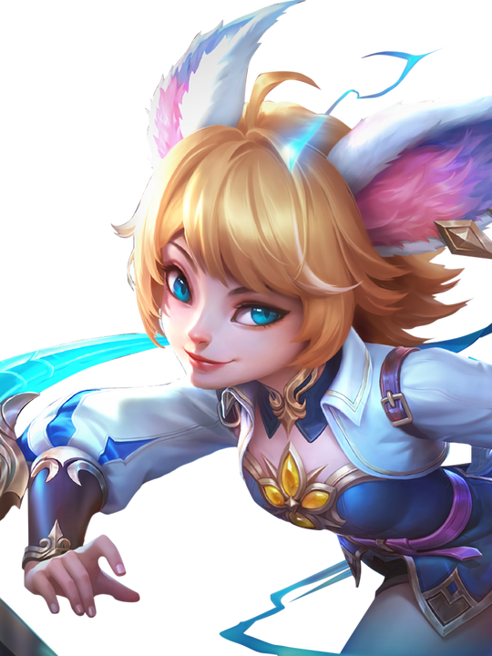

Apa itu MLBB?
Mobile Legends: Bang Bang adalah permainan video seluler bergenre multiplayer online battle arena (MOBA) yang dikembangkan dan diterbitkan oleh Moonton, anak perusahaan dari ByteDance. Dirilis pada tahun 2016, permainan ini makin populer di seluruh dunia, terutama di wilayah Asia Tenggara, dan sejak itu telah melampaui 1 miliar kali unduhan dengan puncak pemain bulanan sebanyak 100 juta. Pada tahun 2021, "Mobile Legends: Bang Bang" mencapai pendapatan kotor sepanjang masa sebesar US$1 miliar dengan 44 persen pendapatannya berasal dari luar Asia, menjadikannya permainan seluler teratas dari genrenya dengan daya tarik paling global.
Mobile Legends adalah permainan MOBA yang dirancang untuk ponsel. Kedua tim masing-masing berisi lima orang berjuang untuk mencapai dan menghancurkan markas musuh sambil mempertahankan markas mereka sendiri untuk mengendalikan tiga jalur, yang dikenal sebagai jalur "atas", "tengah" dan "bawah", yang menghubung ke setiap markas. Di masing-masing tim, ada lima pemain yang mengendalikan karakter sendiri-sendiri, yang dikenal sebagai "hero", dari perangkat mereka sendiri. Karakter lemah yang dikendalikan komputer disebut "minion", yang bersarang di markas tim lalu menyebar ke tiga jalur dan melawan menara serta lawan yang menghadang. Mengumpulkan EXP berguna untuk menaikkan level hero saat permainan berlangsung, dan Mengumpulkan Gold berguna untuk membeli item di dalam permainan yang sedang berlangsung, caranya adalah mengeliminasi monster yang di sebut dengan buff dan mengeliminasi minion agar gold tim bertambah.
My Account
| In-Game Name | ID Player | Current Rank | Highest Rank | Favorite Role |
|---|---|---|---|---|
| Rithz de Fontaine | 1431655379 (15953) | Mythical Honor | Mythical Glory | Assassin |
Favorite Character
Aku suka banget sama hero Joy, yang dapat kalian liat gambarnya di atas karena desainnya yang super cute! Her character design is just so adorable — mulai dari ekspresi wajahnya yang ceria sampai gerakan kecilnya yang playful. Joy tuh punya aura yang bikin mood jadi naik tiap kali mainin dia. I think her look is really unique and refreshing compared to other heroes, makanya aku nggak pernah bosen buat pilih dia di game.
Selain tampilannya, yang bikin aku tambah suka adalah gameplay-nya yang fun dan lincah. She moves really fast and smooth, jadi rasanya satisfying banget pas bisa combo dengan tepat. Joy bukan tipe hero yang tinggal tap-tap aja — dia butuh timing yang pas dan feeling yang kuat biar skill-nya connect semua. That kind of challenge makes her really fun to master, dan bikin aku merasa lebih aktif dalam setiap match.
Dan tentu aja, the most iconic part is her ultimate — the music! Pas skill-nya aktif dan nadanya full, background music-nya langsung berubah dan bikin suasana jadi epic banget. It's like playing a rhythm game in the middle of a battle. Musiknya catchy, dan bikin momen ngeluarin ultimate jadi lebih spesial. That sound effect is something that really sets her apart and makes me enjoy using her even more.
| Joy | |
|---|---|
| Flash of Miracle | |
|

|
|
| HERO INFORMATION | |
| Region | Azrya Woodlands |
| City | Gleaming Marsh |
| Role | Assassin |
| Lane | Jungle |
| Release Date | 2022-11-18 |
| Price | 32000 Battle Points 599 Diamonds |
| Speciality | Chase/Damage |
| Damage Type | Magic |
| Voice Actor | Moriyama Yukira (JP) |
| IN-STORY INFORMATION | |
| Alias |
|
| Internal Name | Joy |
| Birthday | May 31th |
| Age | 14 |
| Gender | Female |
| Race | Leonin |
| Traits | Crafty, devious and tenacious |
| Relationships |
|
The “Child Miracle” who returned to the Leonins after years of wandering.
Lincah dan penuh akal, dikenal sebagai "petty thief" paling infamous di Lumina City, Joy dulu hanya ingin perut yang kenyang dan hati yang hangat. Hidupnya penuh dengan pelarian dan kenakalan kecil, tapi jauh di dalam dirinya, ada kerinduan akan kasih sayang yang tulus. Until one day, takdir membawanya kembali ke tanah para Leonin — tempat di mana cinta tanpa syarat dari sesama mengobati hati Joy yang lama mengembara.
Di sanalah Joy menemukan makna baru dalam hidupnya. No longer afraid of losing love, dia belajar bahwa rumah bukan sekadar tempat, tapi juga orang-orang yang menerimanya apa adanya. Dari situ, Joy berjanji — bukan lagi untuk mencuri demi bertahan hidup, tapi untuk melindungi mereka yang ia sayangi. She's no longer just a shadow in the alley, but a golden flash of hope bagi semua yang mengenalnya.
Sekarang, tiap langkahnya dipenuhi semangat dan irama. Gerakannya cepat bak kilat, dan senyum nakalnya kini menyimpan kekuatan untuk membela. Joy bukan hanya petarung dengan skill luar biasa, tapi juga simbol dari perubahan, cinta, dan keberanian untuk menghadapi masa depan.
Hero Stats
| Attribute | Base stats | ||
|---|---|---|---|
| Level 1 | Level 15 | Growth | |
| HP | 2678 | 5408 | 195 |
| HP Regen | 7.8 | 14.0 | 0.4429 |
| Mana | 0 | ||
| Mana Regen | 0 | ||
| Physical Attack | 119 | 255 | 9.71 |
| Magic Power | 0 | ||
| Physical Defense (Physical Damage Reduced) |
20 (14.3%) | 78 (39.4%) | 4.1429 |
| Magic Defense (Magic Damage Reduced) |
15 (11.1%) | 45 (27.3%) | 2.1429 |
| Attack Speed | 1.13 | 1.54 | 0.0293 |
| Attack Speed Ratio | 100% | ||
| Critical Damage | 200% | ||
| Movement Speed | 260 | ||
Abilities
Humph, Joy's Angry!
Passive
BUFF
Joy becomes Angry! each time her skill hits a non-minion enemy, it will deal 100 (+100%Total Magic Power) Magic Damage and increasing her Movement Speed by 60% that decays over 4s (Hitting the Leonin Crystal will also grant her the Movement Speed effect). This effect has a cooldown of 4s for each target.
Joy's Basic Attack will 65 (+65%Total Physical Attack)(+65%Total Magic Power) Magic Damage.
Meow, Rhythm of Joy!
Skill 2
Blink
CD : 8.0
Joy dashes in the target direction, dealing 120 (+55%Total Magic Power) Magic Damage to enemies in her path. Hitting an enemy or the Leonin Crystal allows Joy to cast this skill again within 1s and gain 1 Beat Energy. Casting this skill on the fourth beat increases the skill damage by 100% and grants a 80 (+60%Total Magic Power) shield that lasts 3s. This skill can be cast up to 4 times in succession.
Look, Leonin Crystal!
Skill 1
SUMMON
CD : 4.0
Joy summons a Leonin Crystal at the target location, dealing 200(+40%Total Magic Power) Magic Damage to nearby enemies and slowing them by 30% for 1s. The Leonin Crystal lasts up to 2s.
Ha, Electrifying Beats!
Ultimate
AOE
CD : 28.0
Joy increases her Physical & Magic Defense by 15 (+10% Total Magic Power) and gains 30% Movement Speed. Over the next 4s, she pulses 8 times, dealing 120 (+40% Total Magic Power) Magic Damage each time to nearby enemies. Each Meow, Rhythm of Joy! cast on the beat increases this skill's damage by 40%. If perfect rhythm is achieved by hitting every beat with Meow, Rhythm of Joy!, Joy also gains 40% Spell Vamp while this skill is active.
This skill unlocks after Joy acquires Beat Energy. Casting this skill with 3 Beat Energy will remove all debufss on Joy and make her immune to slow effects while this skill is active.
I, Joy
Siapa aku?
Saat petir menyambar dadanya, gadis Leonin itu tak bisa menahan diri untuk tidak memikirkan pertanyaan ini.
Dia telah mencari jawabannya selama ini.
"Kamu adalah kelinci kesayangan nenek." — itulah jawaban yang dia terima dari nenek angkatnya. Selama yang ia ingat, mereka tinggal di daerah kumuh Kota Lumina. Meski nenek miskin, dia selalu bisa menemukan cara untuk memberinya makan dan menidurkannya. Saat itu, kalung sihir di dada gadis itu selalu berdetak pelan mengikuti irama lagu pengantar tidur. Menurut sang nenek, dia sudah mengenakan kalung itu saat pertama kali ditemukan. Satu, dua, tiga, empat! Seperti detakan cinta.
Suatu hari, neneknya tak pernah bangun lagi... Gadis itu berdiri di sisi jasad beku sang nenek selama berhari-hari, tapi tak bisa menemukan cara untuk membangunkannya. Detak kalung di dadanya menjadi semakin lambat dan lemah.
Satu... Dua... Tiga... Empat...
Seolah-olah jantungnya digenggam erat oleh sepasang tangan besar, dan dia tak pernah lagi mendengar lagu pengantar tidur itu. Hari itulah gadis itu belajar tentang kematian, belajar bahwa cinta tak selamanya ada. Tak peduli seberapa keras ia mencoba, semuanya akan hilang pada akhirnya. Tanpa alasan!
Sambil menghapus air matanya, ia pun berpikir: di mana dia bisa menemukan sepotong roti hangat?
Gadis itu mulai mengembara. Meskipun hidup selalu penuh kesedihan, kehidupan juga telah mengajarkannya banyak trik. Ia belajar menyelinap ke toko-toko untuk mencuri makanan, kabur dari penjaga kota, bahkan bertarung dengan kucing liar demi bertahan hidup. Sihir Leonin yang dimilikinya cukup kuat untuk melindunginya, mengubah kepahitan hidup menjadi kue manis.
Pada masa-masa itu, jawaban yang paling sering ia dengar adalah "pencuri yang mencoreng nama klan Leonin".
Ia mengingat kata-kata itu dari Harith, seorang penegak hukum dari Tentara Kekaisaran. Harith marah karena gadis itu mencoreng reputasi klan sebagai bangsa yang jujur dan baik hati. Meskipun sudah mencoba menegur dan menghukumnya, gadis itu tak pernah berubah. Kemarahan Harith semakin besar, hingga suatu hari ia menyadari bahwa gadis itu tak pernah kembali ke klan Leonin... Ia bahkan tak tahu siapa dirinya.
Kota Lumina cukup besar untuk membuat pengembara kehilangan jati diri. Gadis Leonin itu tak tahu bahwa ia punya pilihan selain terus mengembara. Setelah beberapa kali pertengkaran, Harith akhirnya berhasil membawanya kembali ke tanah kelahirannya, Rawa Cemerlang.
Terletak di tengah Hutan Azrya, Rawa Cemerlang adalah rumah leluhur para Leonin. Bertahun-tahun hidup mengembara membuat gadis itu selalu waspada. Seperti kucing liar yang dipaksa diadopsi, ia hanya ingin melarikan diri dari rumah barunya.
Pemimpin klan Leonin memberinya jawaban ketiga, "anak mukjizat, sang pembawa ramalan bagi klan Leonin".
Bertahun-tahun lalu, di malam penuh badai, seorang bayi perempuan lahir di Marsh sambil menggenggam "Kristal Leonin". Dalam ramalan kuno klan, ia dikenal sebagai "anak mukjizat" yang akan menyelamatkan bangsa mereka. Namun saat baru berusia tiga tahun, ia terjatuh ke sungai secara tak sengaja...
Pemimpin klan membawa gadis itu ke Kuil Leonin, tempat Kristal Leonin disemayamkan... Bentuknya sama persis seperti kalung di dadanya. Mereka mulai beresonansi.
Satu, dua, tiga, empat!
Seolah-olah lagu nenek kembali terdengar.
Namun bahkan ramalan pun tak mampu mengubah kebiasaan gadis itu. Ia tetap suka mengerjai orang di sekitarnya dan berbohong demi mendapatkan makanan enak. Ia bahkan pernah mengadakan pesta BBQ di dalam Kuil Leonin! Anak-anak lain yang tidak menyukainya pun tak bisa menghadapinya. Saat para penduduk Leonin yang baik hati menunjukkan perhatian padanya, ia selalu teringat momen ketika detak jantungnya melambat... Perasaan menyengat yang tak ingin ia rasakan lagi.
"Aku tak perlu peduli siapa diriku di sini... Kuharap segalanya bisa seperti ini selamanya."
Namun petir yang menyambar di tengah malam menghancurkan mimpinya.
Badai petir yang mengerikan itu seolah ingin menghancurkan segalanya. Gadis itu ketakutan... Ia adalah "anak mukjizat", yang telah diberi begitu banyak makanan dan minuman secara cuma-cuma... Mereka pasti akan memintanya untuk menyelamatkan mereka!
Tapi permintaan sang pemimpin klan hanyalah agar ia pergi ke tempat yang aman. Para Leonin tak pernah berniat mengorbankan seorang anak demi ramalan. Mereka peduli padanya bukan karena menginginkan sesuatu... tapi karena mereka merasa kasihan pada seorang yatim piatu. Para Leonin mengembalikan kebebasan gadis itu, seolah ia adalah anak yang telah kembali ke rumah.
Mendongak ke atas, gadis itu melihat kuil hampir runtuh karena badai petir. Para Leonin menggigil dan mengelilingi kuil, berusaha menopangnya dengan sihir. Sambil menutup mata dan berdoa, mereka mengingat kembali keluarga mereka untuk mendapat ketenangan.
Kalung di dadanya kembali berdetak, pelan dan lembut. Apakah ia akan kehilangan rumah barunya seperti ia kehilangan neneknya?
Saat kilatan petir kembali menyambar dari langit, kuil mulai runtuh. Tiba-tiba... gadis itu berhasil menahan sambaran petir! Ia berlari ke sana kemari di tengah badai, menyerap petir ke dalam tubuhnya agar tidak merusak kuil. Ia terus berlari dan berguling dengan kecepatan tinggi, hingga sebuah petir menyambar dadanya.
"Siapa aku?"
Saat itulah ia menemukan jawabannya.
Kristal Leonin di kuil bergetar bersama dengan kalung di dadanya. Satu, dua, tiga, empat!
"Aku dulu yatim piatu."
Para Leonin dan Kristal bersinar dengan energi sihir yang mengalir dari tubuh gadis itu, seolah sebuah berkah dari rumah. Cahaya itu menyebar ke telinga dan kakinya... menyinari seluruh tubuhnya.
"Aku pernah mencuri makanan dan melakukan banyak hal buruk..."
Gadis itu terus berlari, makin cepat dan makin cepat, hingga tak ada yang bisa menghentikannya.
"Tapi saat ini, aku adalah anak yang dicintai semua orang... Anak mukjizat milik klan Leonin!"
Ia tak lagi takut kehilangan cinta... Kini, ia akan menggunakan hidupnya untuk melindungi mereka yang ia cintai. Cahaya di tubuhnya semakin terang. Seperti kilatan emas, ia menebas awan gelap di atas kepalanya.
"I! AM! JOY!"